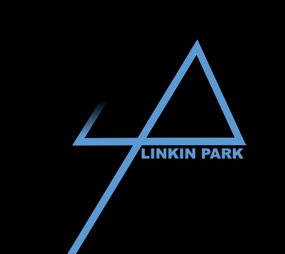

Link In Park
Linkin Park is an American rock band from Agoura Hills, California. Formed in 1996, the band rose to international fame with their debut album Hybrid Theory (2000), which was certified Diamond by the RIAA in 2005 and multi-Platinum in several other countries. Their following studio album Meteora continued the band's success, topping the Billboard 200 album chart in 2003, and was followed by extensive touring and charity work.
Having adapted nu metal and rap metal to a radio-friendly yet densely layered style in Hybrid Theory and Meteora, the band explored other genres on their next studio album, Minutes to Midnight (2007). The album topped the Billboard charts and had the third-best debut week of any album that year. The band continued to explore a wider variation of musical types in their fourth album, A Thousand Suns (2010), layering their music with more electronic sounds. Their fifth album, Living Things (2012), combines musical elements from all of their previous records. Their sixth album, The Hunting Party (2014), returned to a heavier rock sound. Their seventh album One More Light, a more electronic and pop-oriented record, was released on May 19, 2017.
In 2003, MTV2 named Linkin Park the sixth-greatest band of the music video era and the third-best of the new millennium. Billboard ranked Linkin Park No. 19 on the Best Artists of the Decade chart. In 2012, the band was voted as the greatest artist of the 2000s in a Bracket Madness poll on VH1. In 2014, the band was declared as the Biggest Rock Band in the World Right Now by Kerrang!. As the best-selling band of the 21st century and one of the world's best-selling music artists overall, Linkin Park has sold more than 70 million records worldwide and has won two Grammy Awards.